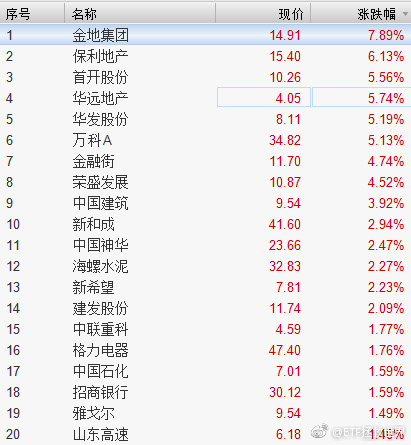

给儿子选英语老师：“这个怎么样。”“太黑了！”（黑人）“……”“这个呢？”“太老了！”（37岁，不过美国人是真的挺显老，像50多）“……”“这个呢？”“这个可以，这个好。”（20岁）如果他不是四岁，好想揍他一顿啊。
回复@吃遍祖国大好河山:2005-2009是第一轮；2010-2015是第二轮。2015年7月1日到现在是第三轮。//@吃遍祖国大好河山:益达，这是第几轮？@ETF拯救世界:其实第二轮开始，总收益率就有点不好计算。因为建仓的时候有大量资金闲置，这部分怎么算收益呢。我用最保守的货币基金，还是收益率很低的那种。比如第三轮用的钱袋子，长期只有3.x%。没事，我就用这个，保守计算嘛。虽然比如易方达b这样的货基收益常年在4.5%以上了。。之前我发过一个问答，说没有投入的部分我会做什么。我相信也几乎不会有人长期只买货基吧。你做个逆回购都能收益上升很多。更别提加上网格、打新这些收益了。买理财，p2p钱宝这些更不用说了……这些我都不算，就算收益率最一般的货基。因为我认为，这个收益率数字一点都不重要。我又不发私募，我又不收费吸粉，没必要把收益率弄得很好看。赚多少钱，赔多少钱，每个人心里都清楚。参考计划的朋友从2015年7月的几百人到2016年的几千人，到现在的至少上万。一个人可能长期是傻子，一群人可能一时是傻子，一群人长期是傻子的可能性不大。今天又新高了。
回复@徐L鑫:500etf不太可能。你说的是对的。你看广发医药2015年6月干到3块钱！溢价超过100%。可惜，现在可能性不大了，规模大了。500etf规模很大，也不太可能。有一些规模小的未来有可能@ETF拯救世界:今天红利涨幅贡献度。有很多地产股。 
其实第二轮开始，总收益率就有点不好计算。因为建仓的时候有大量资金闲置，这部分怎么算收益呢。我用最保守的货币基金，还是收益率很低的那种。比如第三轮用的钱袋子，长期只有3.x%。没事，我就用这个，保守计算嘛。虽然比如易方达b这样的货基收益常年在4.5%以上了。。之前我发过一个问答，说没有投入的部分我会做什么。我相信也几乎不会有人长期只买货基吧。你做个逆回购都能收益上升很多。更别提加上网格、打新这些收益了。买理财，p2p钱宝这些更不用说了……这些我都不算，就算收益率最一般的货基。因为我认为，这个收益率数字一点都不重要。我又不发私募，我又不收费吸粉，没必要把收益率弄得很好看。赚多少钱，赔多少钱，每个人心里都清楚。参考计划的朋友从2015年7月的几百人到2016年的几千人，到现在的至少上万。一个人可能长期是傻子，一群人可能一时是傻子，一群人长期是傻子的可能性不大。今天又新高了。
回复@夏虫碎碎念:我说新高了当然是总资产新高。我说回撤小，也当然是总资产回撤。我什么时候拿已投入部分年化接近20%说事儿了？你见过我说一个字已投入年化收益多少吗？找出来。欲加之罪何患无辞了吧有点。之所以计划和且慢列出来已投入收益率，是为了让投入的人清楚理解已投入部分资金收益率。@ETF拯救世界:今天红利涨幅贡献度。有很多地产股。
回复@HelloWaiting:这一波之前最大回撤0.7%。包含了2015年-2016三次股灾。以后回撤会越来越大，因为仓位越来越高。然而经过这次我相信很多朋友会明白，有节操的回撤一点都不用害怕，分分钟就会新高。@ETF拯救世界:今天红利涨幅贡献度。有很多地产股。
回复@kaka涛:好吗。2011-2014三年多从3000多点跌到2000多点，跌幅40%。同期创业板涨了50%。站在不同的时间，结论就会完全不同。2014年看，这是个大垃圾~//@kaka涛:这个真是牛逼了，真正的好指数//@ETF拯救世界:奖杯准备发给红利了。@ETF拯救世界:$养老产业 sz399812$ 和 $中证红利 sz399922$ 谁先新高……
第三个看疯了//@八大山债人:这里面第16的小公务员说自己苦，呵呵只对领导的苦而已 //@来去之间://@飘雪共青城:转发微博@鲍迪克:讲个故事，东部某市来了家东北企业，对方考察后对环境很满意，于是坐下来沟通，对方领导直接拍了目测20万左右的现金在桌上，说他们懂规矩这是辛苦费，现场小领导和我们几个办事员脸都快吓绿……我们告知对方这边没这种规矩，对方感慨在东北巴拉巴东北经济衰败的20个“细节”
回复@石头里的虫子:这个心态不对。为黑天鹅做准备是对的，但投资是概率问题。要对各种情况都做好准备。//@石头里的虫子:等大坑//@ETF拯救世界:回复@小韭菜V:大盘下跌7%，计划回撤1.7%。这叫什么坑，最多算个小水洼……//@小韭菜V:计划创新高了，从坑里面爬上来了。---:抱歉，作者已设置仅展示半年内微博，此微博已不可见。
回复@小韭菜V:大盘下跌7%，计划回撤1.7%。这叫什么坑，最多算个小水洼……//@小韭菜V:计划创新高了，从坑里面爬上来了。//@ETF拯救世界:准备去南方看雪了---:抱歉，作者已设置仅展示半年内微博，此微博已不可见。